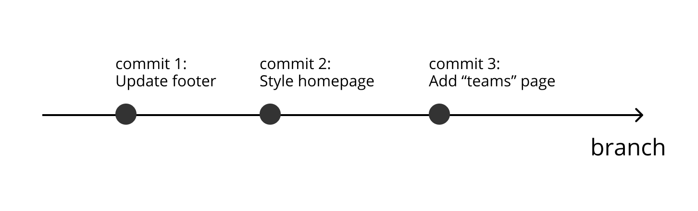

It was always a headache for me when I just started learning about Github. How could every word in the tutorial makes total sense on their own, but when put together, things like "push a commit" stops sounding like English?
At Primary, product designers also code, and the team uses Github for version control. To be honest, although I was super pumped about immersing myself in learning to code from day one in this role, I didn't expect the big rock to come this soon.
I was a total novice when my onboarding pal guided me through using git commands to push my first commit. My palms were sweating when I typed in "git push ..." hit enter. But luckily, after weeks of using Git, I finally understood how it works and how to use command lines to achieve my goals.
Let me try explaining Git to people who had zero knowledge of it in simple language.
Well, imagine you're working with several people on a research project, and you decided to use Dropbox to store research materials. You created a public folder and invited your teammates to contribute to it.
Similarly, when working on a collaborative coding project, you'll need a "Team Folder" to keep and track all your work. In the Git world, this folder is called "Master Repository (master repo)". It is called "master" repo because it will be the one and only team folder for the same project.
Since all team members have access to this master repo, it is important that we can track the history of changes to the repo. Hence here comes the idea of "Branch". A branch is like a logbook. It records changes in chronological order. And we call each record "Commit".
A branch comes in handy when there's more than one person on the team. Each person can branch off from the master branch, work on their own tasks, add commits on their own branch, and request to merge their branch back to the master branch. Being able to create branches makes teamwork much more efficient. Each person could work on their tasks undisturbed and avoid creating chaotics.

That’s pretty much everything you need to know before running your first git command line. Let's take a look at some of the most useful commands as you start off.
Suppose your lovely teammate has set up your local repo for you and you are starting on your first task. You want to create a branch. Open Terminal and cd into the right folder. Then you should see:
→ name-of-your-repo git:(master)
This indicates you are on the master branch of your repo. To create a branch, just do:
git checkout -b {your-new-branch}
After hitting enter, you should see:
→ name-of-your-repo git:(name-of-your-new-branch)
Yay! You're on your new branch!
When you hit a point where you feel like you need to save your progress, first you would want to see the list all the files you have changed since last commit:
git status
Then, choose the files you'd like to add to this commit:
git add {file-name1} {file-name2} {file-name3}
or select all the files shown on the list:
git add .
It's a good habit to check the status again to make sure you didn't miss any files or add any files by mistake.
Then we'll write a message to describe what this commit is about. This message will help you later in identifying what you did for each step.
git commit -m “your message here”
Final step: push your branch to GitHub so others can review your changes.
git push origin your {your-branch}
I know, we are humans and humans make mistakes. Let's talk about how to fix them (hopefully)!
If unwanted files were added to the staging area, but not yet committed, a simple reset will do the job:
$ git reset HEAD {file}
If you need to remove all the files from a commit:
$ git reset HEAD .
The way we fix this is to reset the file on your branch and push the corrected branch. Let's replace the modified file with the corresponding file on your team's master branch:
git checkout origin/master -- {file path}
Then add a commit message and push your fix:
git commit -m “remove a modified file from pull request”
git push origin {your-branch}
Checking out another branch is easy. Let's say you're in the progress of fixing a bug, but a teammate asks you to review their pull request so they can unblock another one's work. You would want to save your progress and check out another branch.
To save your progress, you have two options:
Just do what you would do regularly when you push a commit. After this, check out your teammate's branch:
git checkout {branch}
Sometimes you don't feel like committing the changes, in that case, you can "stash" the changes on the current branch and apply the changes in the stash later. Just do:
git stash
and then,
git checkout {branch}
When you finish visiting another branch and switch back to your work-in-progress branch, do:
git stash apply
This command would automatically apply the latest stash on your current branch.
If you have multiple stashes on a branch, and you don't want to apply the latest one, you can find the stash number and apply a specific stash:
git stash list
git stash apply {stash number}
Similarly, you can also check how many local branches you have. The command is:
git branch
It's a good idea to keep your local repo updated, especially before you create a new branch. To update your local repo, switch to the master branch, then:
git pull
To undo git pull, use:
git merge --abort
That is it! Surely there are a lot more git commands out there, but the above commands have covered 99% of my Git use cases. For more information, read Git Documentation.